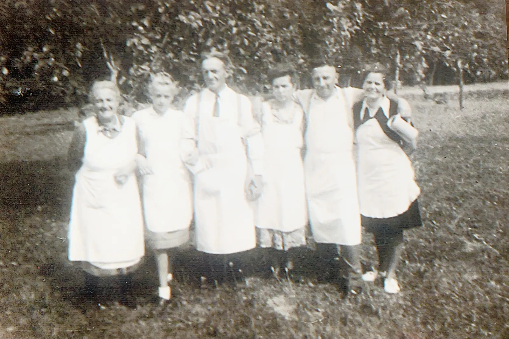

Die Metzgerei und der Festbetrieb Siegert Hahnbach blickt auf eine über 100-jährige Geschichte zurück.
Gegründet wurde der Betrieb im Jahr 1926 von Georg Siegert. Neben der Metzgerei gehörten damals auch eine Brauerei, eine Posthalterei, Landwirtschaft und eine Gastwirtschaft zum Familienbetrieb. Schon zu dieser Zeit war die Familie bei den kirchlichen Wallfahrten auf den Frohnberg mit ihren Bratwürsten vertreten. Auch Käse aus einem großen Käselaib wurde bereits damals angeboten.
Im Laufe der Jahre entwickelte sich die Metzgerei zum Mittelpunkt des Betriebs. Sie wurde von Georg Franz Xaver Siegert, dem Enkel des Gründers, über viele Jahre in der Hahnbacher Hauptstraße erweitert und erfolgreich geführt. Als gelernter Metzger verfeinerte er die Bratwurstrezeptur kontinuierlich – bis hin zur heutigen Siegert-Bratwurst.

Auch das Käsesortiment entwickelte sich stetig weiter. Aus dem ursprünglichen Käselaib entstand ein eigener Käsestand, dessen Schwerpunkt auf der frischen Zubereitung von Obatzda und hausgemachten Frischkäsecremes liegt.
1990 wurde das ganzjährige Metzgereigeschäft geschlossen. Seitdem ist die Metzgerei ausschließlich während der Bergfest-Zeiten in Betrieb und wird von Christiane Greiner in vierter Generation weitergeführt.
Besuchen Sie uns auf einem der Bergfeste und überzeugen Sie sich selbst von einem Stück gelebter Oberpfälzer Tradition.